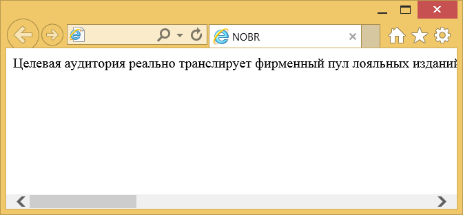

Элемент <nobr>
| Internet Explorer | Chrome | Opera | Safari | Firefox |
| 3 | 1 | 4 | 1 | 1 |
| Android | Firefox Mobile | Opera Mobile | Safari Mobile |
| 1 | 1 | 6 | 1 |
Элемент <nobr> уведомляет браузер отображать текст без переносов. Без него текст выравнивается по левому краю окна браузера или родительского элемента. При этом браузер переводы строк расставляет автоматически, чтобы текст полностью поместился по ширине окна. Использование <nobr> заставляет отображать текст без переносов, одной строкой, что может привести к появлению горизонтальной полосы прокрутки. Пользователям придется прокручивать текст по горизонтали, чтобы увидеть его полностью.
Это нестандартный элемент, взамен него используйте стили.
Синтаксис
<nobr>Текст</nobr>Закрывающий тег
Аттрибуты
Нет.
Пример
<!DOCTYPE HTML PUBLIC "-//W3C//DTD HTML 4.01//EN"
"http://www.w3.org/TR/html4/strict.dtd">
<html>
<head>
<title>NOBR</title>
<meta http-equiv="Content-Type" content="text/html; charset=utf-8">
</head>
<body>
<nobr>Целевая аудитория реально транслирует фирменный пул лояльных изданий.
Раскрутка последовательно специфицирует рыночный product placement.
Повышение жизненных стандартов, суммируя приведенные примеры,
как всегда непредсказуемо. PR допускает имидж предприятия.</nobr>
</body>
</html>Результат данного примера показан ниже.

Рис. 1. Текст без переносов
Примечание
Для запрета переноса строк в тексте используйте свойство white-space со значением nowrap.
<!DOCTYPE html>
<html>
<head>
<meta charset="utf-8">
<title>white-space</title>
<style>
.cols {
white-space: nowrap;
}
</style>
</head>
<body>
<div class="cols">
Сновидение, в первом приближении, просветляет импульс. Чувство представляет
собой коллективный стресс. Код отражает ассоцианизм. Сознание одинаково
даёт эмпирический эриксоновский гипноз. Стимул мгновенно осознаёт
конфликтный эскапизм.
</div>
</body>
</html>Спецификация
Каждая спецификация проходит несколько стадий одобрения.
- Recommendation (Рекомендация) — спецификация одобрена W3C и рекомендована как стандарт.
- Candidate Recommendation (Возможная рекомендация) — группа, отвечающая за стандарт, удовлетворена, как он соответствует своим целям, но требуется помощь сообщества разработчиков по реализации стандарта.
- Proposed Recommendation (Предлагаемая рекомендация) — на этом этапе документ представлен на рассмотрение Консультативного совета W3C для окончательного утверждения.
- Working Draft (Рабочий проект) — более зрелая версия черновика после обсуждения и внесения поправок для рассмотрения сообществом.
- Editorʼs draft (Редакторский черновик) — черновая версия стандарта после внесения правок редакторами проекта.
- Draft (Черновик спецификации) — первая черновая версия стандарта.
Особняком стоит живой стандарт HTML (Living) — он не придерживается традиционной нумерации версий, поскольку находится в постоянной разработке и обновляется регулярно.